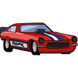

<!DOCTYPE html>
<html>

<head>
    <meta charset="utf-8" />
    <title>Raicing</title>
</head>

<body>
    <script src="../Chapter 11/jquery-3.3.1.min.js"></script>
    <script>
        var Car = function (x, y, speed) {
            this.x = x;
            this.y = y;
            // #1. Рисование в конструкторе Car
            // Добавьте вызов метода draw в конструктор Car, чтобы объекты
            // автоматически отображались в окне браузера после их создания.
            this.draw();
            //             #2. Добавьте свойство speed
            // Доработайте конструктор Car, чтобы он добавлял создаваемым
            // объектам свойство speed (скорость) со значением 5. Используйте
            // это свойство в методах перемещения вместо числа 5.
            // Затем попробуйте задавать различные значения скорости,
            // чтобы машины двигались быстрее или медленнее.
            this.speed = speed;
        };

        Car.prototype.draw = function () {
            var carHtml = '';

            this.carElement = $(carHtml);

            this.carElement.css({
                position: "absolute",
                left: this.x,
                top: this.y
            });
            $('body').append(this.carElement);
        };

        //         #3. Гонки
        // Доработайте методы moveLeft, moveRight, moveUp и moveDown,
        // чтобы вместо перемещения машин всегда ровно на 5 пикселей
        // они принимали величину сдвига в качестве аргумента. К при-
        // меру, в этом случае для перемещения машины nissan на 10 пик-
        // селей вправо нужно будет дать команду nissan.moveRight(10)

        Car.prototype.moveRight = function (speed) {
            if (speed) {
                this.x += speed;
            } else {
                this.x += this.speed;
            }
            this.carElement.css({
                left: this.x,
                top: this.y
            });
        };
        Car.prototype.moveLeft = function (speed) {
            if (speed) {
                this.x -= speed;
            } else {
                this.x -= this.speed;
            }
            this.carElement.css({
                left: this.x,
                top: this.y
            })
        }
        Car.prototype.moveUp = function (speed) {
            if (speed) {
                this.y -= speed;
            } else {
                this.y -= this.speed;
            }
            this.carElement.css({
                left: this.x,
                top: this.y
            })
        }
        Car.prototype.moveDown = function (speed) {
            if (speed) {
                this.y += speed;
            } else {
                this.y += this.speed;
            }
            this.carElement.css({
                left: this.x,
                top: this.y
            })
        }

        var tesla = new Car(20, 20, 0);
        var nissan = new Car(100, 200, 0);
        // tesla.draw();
        // nissan.draw();
        // var timerId = setInterval(function () {
        //     tesla.moveRight();
        // }, 1000)

        //         Теперь используйте setInterval, чтобы двигать две машины
        // (nissan и tesla) вправо, каждые 30 миллисекунд смещая их
        // на случайное расстояние от 0 до 5 пикселей. Вы увидите, как
        // машины едут по экрану, то и дело меняя скорость. Попробуйте
        // угадать, какая из машин достигнет границы окна первой.

        var setId = setInterval(function () {
            var random = Math.floor(Math.random() * 5)
            tesla.moveRight(random);
            var random2 = Math.floor(Math.random() * 5)
            nissan.moveRight(random2);
        }, 30)
    </script>
</body>

</html>